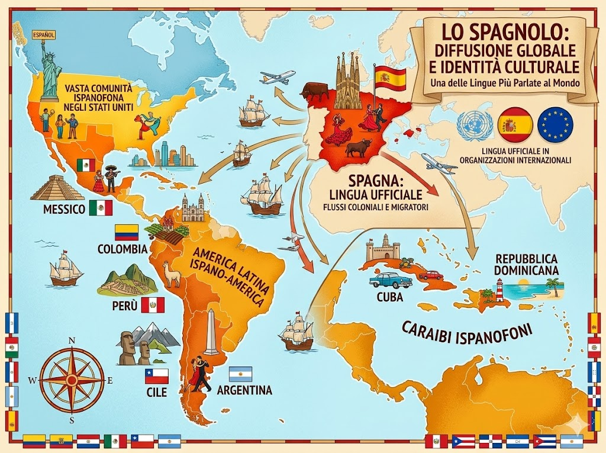
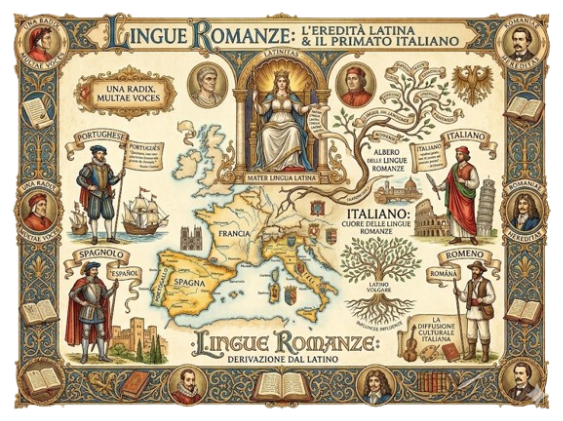

Lo spagnolo è la lingua ufficiale della Spagna ed è una delle lingue più parlate al mondo. È lingua ufficiale nella maggior parte dei Paesi dell’America Latina, tra cui Messico, Argentina, Colombia, Perù e Cile. È inoltre parlato negli Stati Uniti, dove esiste una vasta comunità ispanofona, e in parte dei Caraibi, come a Cuba e nella Repubblica Dominicana. Grazie alla storia coloniale e ai flussi migratori, lo spagnolo è oggi una lingua di grande diffusione internazionale ed è una delle lingue ufficiali di importanti organizzazioni internazionali.

Le lingue romanze sono un gruppo di lingue derivate dal latino parlato nell’antica Roma e si sono sviluppate dopo la caduta dell’Impero romano. Tra le principali lingue romanze ci sono l’italiano, il francese, lo spagnolo, il portoghese e il rumeno. Sono diffuse soprattutto in Europa e nelle Americhe, ma anche in alcune regioni dell’Africa e dell’Asia, grazie alle espansioni coloniali dei secoli passati. Pur essendo diverse tra loro, condividono molte somiglianze nel vocabolario e nella struttura grammaticale proprio per la loro origine comune.

La storia dello spagnolo inizia dal latino volgare parlato nella penisola iberica durante il dominio dell’Impero Romano. Con la caduta dell’Impero e le invasioni germaniche, il latino si trasformò progressivamente nei volgari locali, fino alla formazione del castigliano nel Medioevo. Un momento decisivo fu il regno di Alfonso X il Saggio, che nel XIII secolo promosse l’uso del castigliano come lingua ufficiale dell’amministrazione e della cultura. Nel 1492, anno della pubblicazione della prima grammatica castigliana da parte di Antonio de Nebrija e della scoperta dell’America, lo spagnolo iniziò a diffondersi nel Nuovo Mondo. Nei secoli successivi si affermò come lingua della letteratura e della cultura, anche grazie a opere come il Don Chisciotte di Miguel de Cervantes. Nel Settecento fu fondata la Real Academia Española, con l’obiettivo di regolare e tutelare la lingua, che nel tempo si è consolidata come una delle principali lingue internazionali.